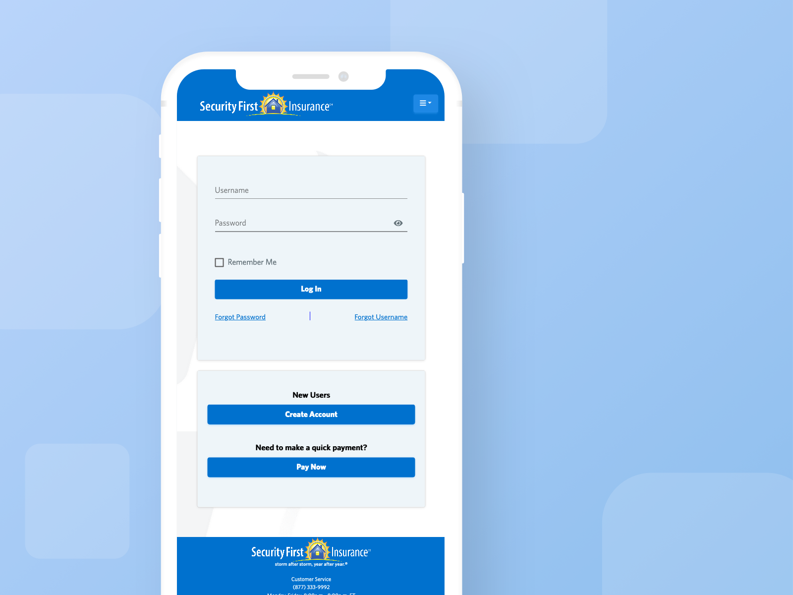

Description
A centralized customer portal for accessing homeowners insurance information, including claims filing, payment processing, and document viewing.
About the Project
Elevating the customer experience for Security First Insurance meant a comprehensive overhaul of their existing customer portal. Collaborating closely with business analysts, developers, and the project manager, my role was to translate the established brand guidelines into a tangible and intuitive digital platform.
My contribution centered on visualizing and defining the enhanced portal's functionality. Through the creation of detailed wireframes and interactive prototypes, I articulated the user flows, interface elements, and motion interactions. These visual deliverables were instrumental in shaping the business requirements, ensuring that the development team had a clear understanding of the 'must-have' features from a user-centric perspective.

Beyond the portal's UI/UX, I recognized the critical importance of clear communication during this transition. I took the initiative to craft the all-employee email, designed to build internal awareness and enthusiasm for the new application. Furthermore, I developed the customer-facing email communication, carefully introducing the enhanced features and benefits to ensure a smooth adoption. Recognizing that a positive customer experience extends beyond the digital interface, I advocated for comprehensive internal training, empowering the customer support team to provide assistance and reinforce the value of the new portal.